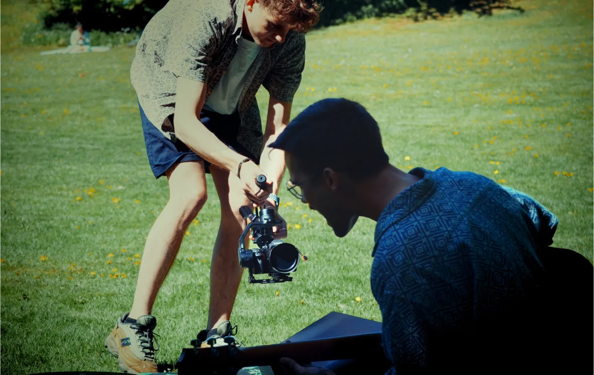
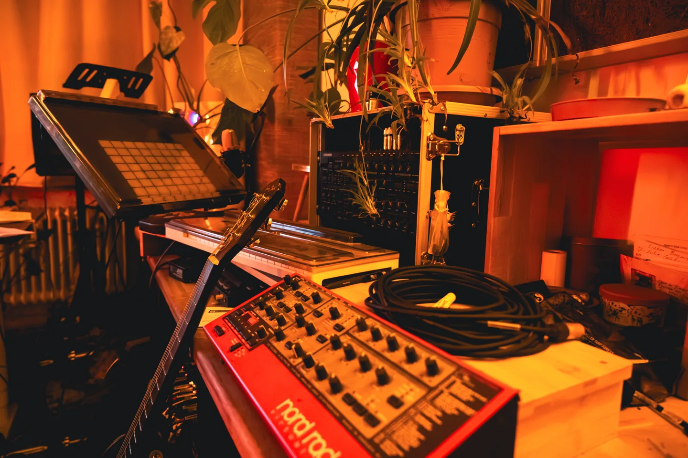
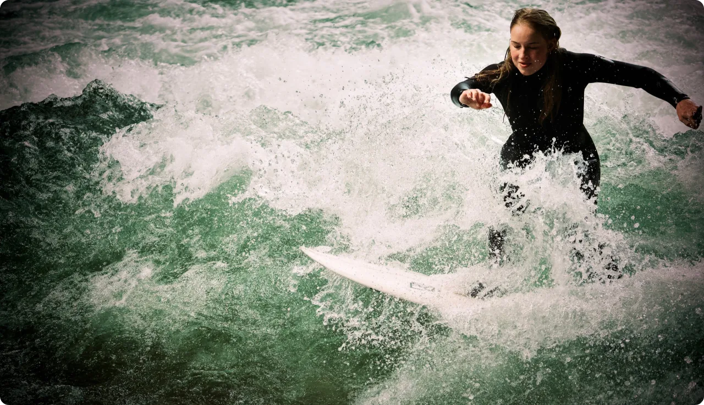
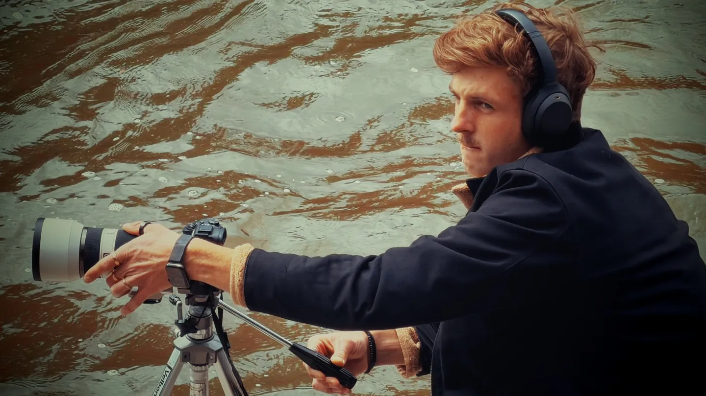

Über unsFoto- und Videotechnik in München
Seit über 14 Jahren hinter der Kamera
Mit Leidenschaft fürs Detail

Seit über 14 Jahren sind wir in der Videografie tätig und haben unsere Leidenschaft in den letzten Jahren auf die Fotografie ausgeweitet. Unser Fokus liegt darauf, visuelle Inhalte zu schaffen, die Ideen, Marken und Geschichten authentisch und wirkungsvoll zum Leben erwecken.
Dabei steht für uns immer die Vision unserer Kunden im Mittelpunkt. Unser Anspruch ist es, individuelle Wünsche präzise umzusetzen und Ergebnisse zu liefern, die höchsten Erwartungen gerecht werden. Auf Wunsch bringen wir zusätzlich unsere eigene kreative Handschrift ein, um jedes Projekt einzigartig und unverwechselbar zu gestalten.
Unsere Arbeit ist das Handwerk der Wahrheit

Durch die regelmäßige Zusammenarbeit mit anderen Künstlern und Kreativen entstehen immer wieder neue Perspektiven, innovative Ansätze und inspirierende Ideen. Als leidenschaftliche Reisende entdecken wir ständig neue Orte, Kulturen und Eindrücke, die unsere Arbeit bereichern und unsere Kreativität stetig weiterentwickeln.
Ob Video- oder Fotoproduktion – unser Ziel ist es, emotionale und ausdrucksstarke Inhalte zu erschaffen, die Menschen erreichen, nachhaltig wirken und einen bleibenden Eindruck hinterlassen.
Lassen Sie uns zusammenarbeiten
Kontaktieren Sie uns für Ihr nächstes Projekt oder schauen Sie sich unser Portfolio an
